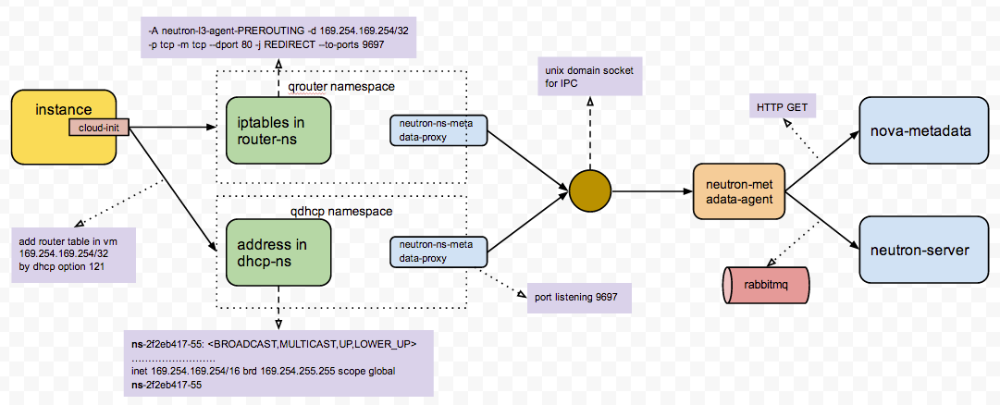

虚拟机启动时候需要注入hostname、password、public-key、network-info之类的信息，以便虚拟机能够被租户管理。对于这些信息的注入openstack提供了两种方式， guestfs-inject以及metadata-server。
guestfs-inject的使用很受限制尤其是并不是所有镜像都能够支持这种方式，I版本也以及取消了这种方式； metadata-server使用上更为灵活，但是他们都依赖镜像内部必须装有cloud-init组件，尽管如此，由于aws力挺metadata-server，所以这已经成为了虚拟机 信息注入方案事实上的标准。
本文主要探讨metadata-server在openstack中如何实现。
cloud-init是一个在启动的时候定制你的Iaas平台中虚拟机的包，它可以帮助你重新定义你的虚拟机而不需要重新安装，只需要加入对应的配置项即可。在Ec2中有很多镜像都安装了cloud-init来方便用户定制自己的虚拟机。它可以让你在虚拟机启动的时候设置语言环境，设置主机名，甚至生成私钥，添加用户自己的ssh公钥到虚拟机.ssh/authorized_keys, 设置临时挂载点等等。
cloud-init 项目地址: https://launchpad.net/cloud-init
cloud-init 文档地址: http://cloudinit.readthedocs.org
metadata字面上是元数据，是一个不容易理解的概念。在除了openstack的其他场合也经常会碰到。openstack里的metadata，是提供一个机制给用户，可以设定每一个instance 的参数。
Amazon首先提出了metadata的概念，并搭建了metadata的服务，这个服务的公网IP是169.254.169.254，通常虚拟机通过cloud-init发出的请求是:
http://169.254.169.254/latest/meta-data
后来很多人给亚马逊定制了一些操作系统的镜像，比如 ubuntu, fedora, centos 等等，而且将里面获取 metadta 的api地址也写死了。所以opentack为了兼容，保留了这个地址 169.254.169.254。然后通过iptables nat映射到真实的api上。
metadata在openstack中的BP: https://blueprints.launchpad.net/nova/+spec/openstack-api-metadata
metadata-server的具体实现是在nova-api组件中，nova.conf中与metadata有关的配置如下:
enabled_apis=ec2,osapi_compute,metadata
# OpenStack metadata service manager
metadata_manager=nova.api.manager.MetadataManager
# IP address for metadata api to listen
metadata_listen=0.0.0.0
# port for metadata api to listen
metadata_listen_port=8775
# Number of workers for metadata service
metadata_workers=<None>
# 和neutron-metadata-agent 通信相关
service_neutron_metadata_proxy=True
neutron_metadata_proxy_shared_secret=
具体的代码实现在 api/metadata 下:
metadata=metadata {
__init__.py
base.py
handler.py
password.py
vendordata_json.py
}
通常我们使用neutron实现虚拟机的网络方案，neutron的metadata-agent并不会自己实现metadata服务，而是把cloud-init的请求转发给nova-api中的metadata服务，具体服务流程请看下图:
虚拟机通过cloud-init组件请求169.254.169.254这个地址的metadata服务，这时这个请求会有两种方式处理。
当虚拟机所在的子网拥有网关而且连接了l3-router，则通过qrouter的namespace中的iptables处理； 当虚拟机所在的子网没有网关，是个封闭的子网，那么dhcp服务的虚拟网卡会添加一个169.254.169.254的ip；
接收的cloud-init请求由ns-metadata-proxy处理，ns-metadata-proxy与metadata-agent通过unix domain socket实现IPC，实现将对ns-metadata-proxy的请求交给metadata-agent处理。
metadata-agent接收请求，将请求交给metadata-server的真实实现者nova-api。